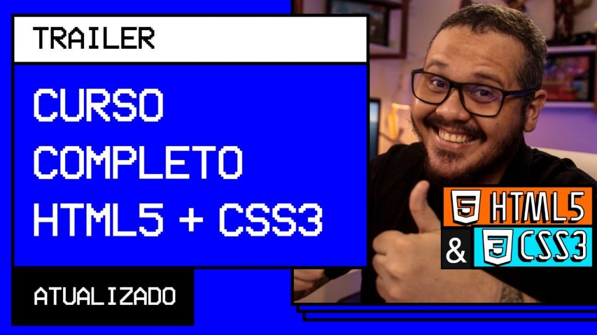

Curso em Vídeo
Curso em Vídeo é uma plataforma de ensino gratuita que disponibiliza aulas ensinando os primeiros passos de linguagens como CSS, JavaScript, PHP, MySQL e muitas outras. Há também cursos para quem não busca se tornar um desenvolvedor, mas que são importantes qualificações para o mercado de trabalha como: Word, Excel, Photoshop, Marketing Digital e etc. Há disponibilidade de certificados ao concluir os cursos, desde que o aluno seja um apoiador do projeto. Outro grande destaque e diferencial do Curso em Vídeo é o fundador e professor Gustavo Guanabara. Muito conhecido por suas aulas alegres e dinâmicas, Guanabara é muito recomendado por seus alunos pela sua didática, clareza e eficiência no ensino.
Youtube
O youtube é mais uma excelente plataforma gratuita que pode ser explorada pelos interessados em desenvolvimento. Nela sempre há canais e conteúdos para todo tipo de desenvolvedor, desde o iniciante até o avançado. Para os inicinantes que querem colocar seus primeiros códigos em prática, recomendamos o canal da Miriam TechCod. Para você que quer um conteúdo que fale mais sobre o mercado de trabalho e dicas básicas para programadores e atualidades assistam os vídeos dos canais Fabio Akita e Código Fonte TV. E por acaso se você deseja um conteúdo mais descontraído que te apresente como é o dia a dia de um profissional desenvolvedor e que também fale sobre mudança de carreira e cursos, recomendamos o canal da Rafaella Ballerini.
Alura
Se você busca uma plataforma gigante com mais de 1.319 cursos, completa, onde há formações de conteúdos do mercado de trabalho e que irá te apresentar a ordem dos cursos que você precisa fazer para determinado objetivo, este lugar é na Alura. Uma das maiores plataformas de ensino do Brasil de cursos de tecnologia que capacita desde iniciantes até profissionais que já estão no mercado de trabalho. Além dos milhares de cursos disponíveis, há também desafios, podcasts e muitos conteúdos valiosos que irão te deixar sempre atualizado.